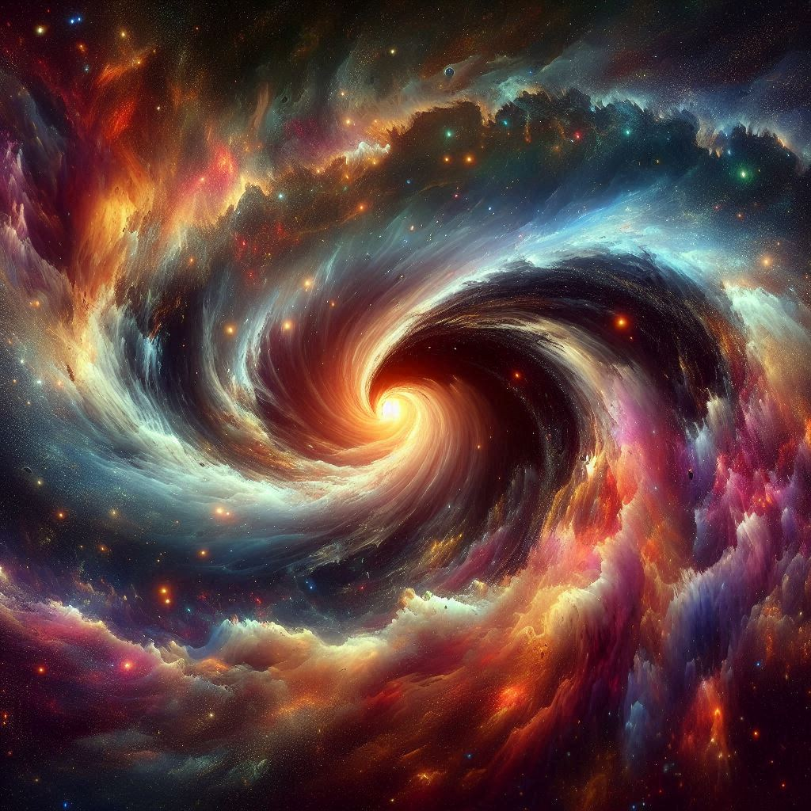

Dulce María Espinosa Saviñón, é uma renomada cantora, atriz e compositora
mexicana,reconhecida por sua versatilidade artística e talento desde tenra idade. Nasceu em 6 de dezembro de
1985, na
Cidade do México, e desde cedo demonstrou seu interesse e habilidade nas artes cênicas e na música.
Sua carreira começou ainda na infância, quando participou de comerciais e programas de televisão. Porém, foi
em 2004 que sua trajetória ganhou destaque ao integrar o grupo musical RBD, formado no sucesso da telenovela
"Rebelde". Como parte do grupo, Dulce Maria alcançou fama internacional, viajando pelo mundo em turnês e
gravando vários álbuns de sucesso. Após o fim do RBD em 2008, Dulce Maria seguiu carreira solo, lançando seu
álbum de estreia, "Extranjera", em
2010. Desde então, tem continuado a sua jornada musical, lançando diversos álbuns e singles que conquistaram
tanto os fãs antigos quanto novos admiradores. Além de sua carreira na música, Dulce Maria também expandiu
seus horizontes para a atuação, participando de
várias produções televisivas e cinematográficas no México. Sua versatilidade artística e seu carisma a
tornaram uma figura querida não apenas no mundo latino, mas também além das fronteiras hispânicas.
Ao longo dos anos, Dulce Maria demonstrou uma dedicação contínua à sua arte, mantendo-se ativa tanto na
música quanto no entretenimento, sempre buscando inovar e surpreender seu público. Sua influência e legado
na cena
cultural latino-americana são indiscutíveis, e sua jornada artística continua a inspirar e encantar milhões
de fãs ao redor do mundo.Dulce María também expandiu seus talentos para a escrita, lançando seu primeiro
livro,
"Dulce Amargo", em 2013. Esta obra autobiográfica oferece um olhar intimista sobre sua vida, compartilhando
experiências pessoais, reflexões e sentimentos profundos. Com uma narrativa franca e cativante, Dulce María
conquistou não apenas os fãs de sua música, mas também leitores ávidos por histórias autênticas e
inspiradoras. Seu sucesso como escritora demonstra sua habilidade de se expressar de forma multifacetada,
adicionando mais
uma faceta à sua já impressionante carreira artística.
Citações Dela:
PEDACINHOS DE ESTRELA(Dulce maria)

" As vezes, nossos sonhos caem no chão
Como pedacinhos de
estrelas que
pouco
a pouco se apagam, nosso coração, chora em silêncio, E quando as lágrimas caem, gelam todo o
corpo e
o
coração de tanto amar se converte em gelo Para não sofrer mais, para já não chorar, mas se
voltar ao
ceu, se
darás conta que tem milhões de estrelas e cada uma é um sonho por cumprir, e a força em seu
interior,
derreterá o gelo em seu coração. Só nunca deixe de acreditar, porque o amor e teus sonhos são a
única porta
Para a eternidade."